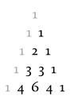

This chapter describes how space is usually modelled in 2D/3D GIS and related disciplines, as well as the non-spatial characteristics that are typically used together with it, such as time and scale. §3.1 explains what spatial modelling is and the abstraction process through which it is accomplished, discussing the main approaches that can be followed at three levels in this abstraction process, which take the form of data models, data structures and dual combinatorial/embedding structures. §3.2 describes how 2D and 3D space is currently modelled in a range of representative concrete cases, from the very minimal representations used in exchange file formats, in which simple structures and low storage requirements are preferred, up to those used internally in CAD-like software, in which the complex operations that are required necessitate the explicit storage of precise topological relationships.
Afterwards, this chapter contains sections on how specific non-spatial characteristics—that nevertheless have a strong link to space—are modelled: time in §3.3 and geographic scale or the level of detail of a model in §3.4. Finally, §3.5 concludes the chapter by pointing out some of the shortcomings of the aforementioned approaches to model 2D/3D space, time, scale and attributes. As will be seen in Chapter 4, many of these shortcomings can be resolved by using a higher-dimensional modelling approach.
3.1 Spatial data models and data structures
Spatial modelling aims at the creation of digital representations of real-world objects. However, real-world objects are complex and vaguely defined, while computers can only operate on their heavily abstracted and precisely defined digital counterparts. The spatial modelling process therefore uses a series of progressive abstractions, which start by interpreting reality as a set of high-level concrete entities that still resemble real-world objects and processes, and ultimately aims at creating abstract low-level representations that are close to what is actually stored in a computer, possibly using intermediate levels in the process.
This implies the existence of different levels of abstraction, and at each of these levels different approaches can be followed. While not all of these approaches are compatible with each other, the feasible combinations nevertheless result in a very large number of different computer representations.
As §3.1.1 explains, there are many classification schemes that attempt to group these approaches in a meaningful way according to various criteria, finding similarities and identifying schemes used by more than one representation. However, there is no agreement on the optimum number of levels of abstraction to be used, at which level some of these representational choices fit, nor a comprehensive clear-cut classification of them with no overlapping methods. In fact, as many of these choices only partially solve the difficulties of representing a digital object, a single computer system generally must resort to multiple methods. For instance, implicit (high-level) models are often used as a way to provide easy user interaction in software. However, these generally have to be ‘evaluated’ into another, more explicit (low-level) model in order for them to be visualised [Mäntylä, 1988] or to perform the type of computations expected in GIS, such as many spatial analysis and geometric operations.
Nevertheless, recognising this layered approach as the basis of the spatial modelling process, this section introduces the process by describing the main approaches that can be followed at three different levels: high-level data models using different paradigms to structure and discretise space in §3.1.2, how data structures implement these data models to model 2D/3D space in a form that is easy to implement in a computer in §3.1.3, and how combinatorial and embedding structures respectively model the topological and geometric information of some of these data structures in §3.1.4.
3.1.1 Classifications of spatial models
Considering that there is an incredible variety of methods that are used to create digital models of the world, but many of these share important parts of their respective approaches, there are various classifications that attempt to group them in a meaningful way.
Some of these are primarily based on human cognition of space. Couclelis [1992] distinguishes views based on empty space populated by discrete objects from those based on continuous space-filling fields, and Goodchild [1992] links objects and fields to specific computer models that are suitable for them. Freundschuh and Egenhofer [1997] makes distinctions based on the scale of such models compared to how people experience space, separating models of objects that are intuitively manipulatable by humans from those that are not.
Others are based on suitability for a particular application or use case. For example, Afyouni et al. [2012] does so for indoor navigation, Gold [2005] for multidimensional GIS, Domínguez et al. [2011] for building interiors and Pelekis et al. [2004] for spatio-temporal models.
However, for the purposes of this thesis, it is more interesting to consider the classifications that reflect a different discretisation of space or mathematical basis, as these will produce significantly different computer representations.
Regarding general classifications in the GIS domain, researchers and practitioners alike generally agree on the existence of two high-level data models—formalised structures describing the world as abstract primitives—, which are the vector and raster models. These are subdivided into a variety of low-level data structures, particular implementations of these data models, of which there are many [van Kreveld, 1997a]. This classification is not ideal as GIS data structures are usually specified in an ad hoc manner, sometimes accompanied with added indexing structures that do not neatly fit into the vector or raster approach (e.g. R-trees [Guttman, 1984] and \(k\)-d trees [Bentley, 1975]).
Apart from data models and data structures, some authors consider additional levels. Frank [1992] considers spatial concepts as well, the human notions used to understand space. Peuquet [1984] considers reality itself as a topmost level, including all aspects that may or may not be perceived by individuals, and a lowermost level with the file structure, describing how the information is actually represented in hardware. These are certainly interesting and worthy of study, but they are out of the scope of this thesis.
In the domain of geometric modelling and computer graphics, the schemes used are more varied, and thus the classifications used differ significantly. For 3D objects, there is usually a high-level classification with several solid representation schemes [Requicha, 1980; Hoffmann, 1992; Foley et al., 1995], general paradigms to model the world using a different approach to discretise and decompose objects. As these normally do not reach the level where it is possible to unambiguously devise a single computer implementation, these are more akin to the data models used in GIS. Mäntylä [1988] follows a similar classification, but groups these schemes into three paradigms: decomposition models, constructive models and boundary models, while recognising the existence of hybrid approaches combining multiple paradigms.
While some of these schemes use 3D primitives stored as simple parametric structures, many of them rely on the specification of 2D primitives using a separate mechanism, which can also be used directly for the description of 2D objects. These are usually described at a low level, generally consisting of 2D cell or simplicial complexes respectively in the form of polygon or triangle meshes, which use one of a few data structures [Joy et al., 2003; Alumbaugh and Jiao, 2005; Blandford et al., 2005; de Floriani and Hui, 2005].
Some authors follow a more pragmatic approach, directly classifying data structures based on the class of objects that they are capable of representing. Čomić and de Floriani [2012] does so for cell complexes, de Floriani and Hui [2005] for simplicial complexes, Lienhardt [1991] for spaces in different dimensions, de Floriani et al. [2005] for models supporting multiple levels of detail, and Lienhardt et al. [2009] for models for simplicial, simploidal18 and cell structures.
Finally, at the lowest level, some authors distinguish between a topological or combinatorial model [Lienhardt, 1991], which describes the connectivity between a set of predefined elements, and a geometric or embedding model, which specifies the exact shape and position of individual elements [Mäntylä, 1988].
3.1.2 Data models or representation schemes
Data models are considered as different representation schemes operating at a high-level, differing mostly in their overall approach to decompose and discretise space into a set of elements with certain characteristics. Just as the concepts of geometry and topology seen in Chapter 2, these models are essentially dimension-independent—even if in practice they are generally implemented as dimension-specific data structures.
As argued by McKenzie et al. [2001], the ideal data model to be used depends on the application. An ideal data model is expected to be both simple and powerful, but unfortunately these properties tend to conflict. Powerful structures are built upon small and simple primitives of a fixed form with a fixed (or at least bounded) number of links to other related primitives, such as boxes or simplices, enabling them to have a simple but powerful algebra to manipulate them and to navigate between their primitives efficiently, e.g. the quad-edge in 2D [Guibas and Stolfi, 1985] or the facet-edge in 3D [Dobkin and Laszlo, 1987]. However, partitioning complex objects into these simple primitives can be difficult and result in a large number of primitives, requiring significant preprocessing, making them space-intensive and limiting the types of objects that might be stored. In this sense, different data models make different choices and necessarily involve a trade-off.
The main data models that are used in 2D and 3D are briefly described in the following sections, roughly in order of increasing explicitness. A short statement on how well they extend to higher dimensions is also included in each section. The most promising of these models are further analysed in a higher-dimensional context in §4.3.
Primitive instancing
In primitive instancing, the system defines a library of primitives suitable for a particular application. Each of the primitives in the library represents a template for an object that can be parametrised in terms of high-level parameters, such as the number of teeth and the size of a gear or the diameter and thickness of a pipe [Foley et al., 1995]. In 3D city modelling, a common application involves the modelling of roofs using a library of basic roof shapes (e.g. flat, hipped and gabled) [Kada, 2007].
The fact that only a few parameters need to be defined makes it easy to create objects, that is, as long as the desired object resembles one of the templates in the library. Moreover, given these parameters and a primitive’s position and orientation, a program can create the geometry of an object that matches those parameters as output using a more explicit representation. Such an object can then be used either directly or as a base for further operations.
Usually, the primitives used in primitive instancing are 3D volumetric objects, but they can actually be objects of any dimension. However, this approach is not very practical for higher-dimensional models of geographic information, as the objects modelled generally do not conform to a set of easily parametrisable primitives19.
Sweep representations
Many objects can be modelled as the space occupied by another object while it is being translated and rotated along a path. Usually a 2D cross-section is used for this purpose, which is either translated or rotated, generating a volume in 3D space. Generalisations where the cross-section is deformed as well are sometimes considered [Blackmore et al., 1994]. When the path is linear and the cross-section is not rotated, it is called a translational sweep, or an extrusion as it resembles a physical extrusion process as used in manufacturing. When the cross-section does not move and it is merely rotated, it is called a rotational sweep or a solid of revolution. Among other applications, this representation is particularly convenient for applications that require volume computations as it matches well with calculus techniques to compute integrals, which can be easily solved numerically in a computer [Lee and Requicha, 1982].
Since the description of a 2D cross-section is easier than that of a full 3D volume, this significantly eases the process of modelling certain types of objects [Weld and Leu, 1990]. In a higher-dimensional context, this property is later used to generate \(n\)-dimensional extruded models in Chapter 6. Generating more general higher-dimensional sweeps and revolutions is also possible using similar methods.
Constructive solid geometry
Constructive solid geometry (CSG) [Requicha and Voelcker, 1977, §12.3] represents objects as a tree of regularised Boolean set operations on a set of simple parametrisable primitives. In most instances, these are volumetric primitives such as balls, cylinders, parallelepipeds, cones and tori. Figure 3.1 shows an example of such an object. One of the strengths of CSG is that it allows many operations to be distributed among the primitives in a tree.
The regularisation step ensures that the resulting objects of any Boolean set operation are both volumetric and water-tight [Requicha and Tilove, 1978], making many computations easy and robust. It also makes it relatively easy to transform a CSG tree to a more explicit representation. CSG is therefore used in most CAD software and in many game engines.
While CSG extends naturally to higher dimensions, evaluating general CSG trees into more explicit representations is non-trivial in dimensions higher than three. A possible approach to do so would involve higher-dimensional Nef polyhedra, which are described afterwards.
Boolean set operations on half-spaces
There are various representations that store objects using an expression made of Boolean set operations on a set of (open or closed) half-spaces. Any convex object of any dimension can be represented as the intersection of a finite set of half-spaces, a common problem in both linear programming and computational geometry [Shamos and Hoey, 1976; Preparata and Muller, 1979]. As Figure 3.2 shows, if a polyhedron is first decomposed into convex parts [Chazelle and Dobkin, 1979; Bajaj and Dey, 1990], it is then possible to represent an object as a union of these convex parts, which are then represented as intersections of half-spaces.
(a)
(b)
(c)
Figure 3.2: (a) A polygon can be represented as the union of its decomposition into the convex polygons (b) and (c). Each of these can then be represented as the intersection of four half-planes.↩
Each of these half-spaces can then be stored easily, e.g. as a tuple containing the coefficients of a hyperplane20 equation plus an up/down direction [Naylor, 1990; Thompson, 2007]. The half-spaces for an object can be stored either all together or separate per convex part. Together, for instance, as a collection of plane equations that represent all the faces of all the convex parts, and each convex part is represented as a set of tuples of Boolean values, where each value states whether the part is on the up or down side of a specific plane [Tammik, 2007].
Nef polyhedra
Nef polyhedra [Nef, 1978; Bieri and Nef, 1988] follow a similar approach to half-space models, but extend it with the concept of a local \(n\)-dimensional pyramid21, which stores the neighbourhood information around every vertex. As Figure 3.3 shows, the local pyramid of a vertex thus contains the symbolic intersection of an infinitesimally small sphere (in 3D) or circle (in 2D) with the volumes, faces and edges incident to this vertex. An incident volume thus becomes a face, an incident face becomes an edge, and an incident edge becomes a vertex on the surface of the local pyramid sphere/circle, essentially lowering the dimension of every object by one. An 2D/3D object can be represented as a set of local pyramids, which can individually be stored using simpler 1D/2D data structures.
Nef polyhedra have two properties that make them one of the most promising representations for higher-dimensional models of geographic information: (i) the possibility to reduce the dimensionality of a representation by one, which can be applied recursively in order to model objects of any dimension, and (ii) the possibility to perform operations on the local pyramid level. The former is discussed in more detail in §4.3.3 and the latter in §5.1.2.
Function representation
Function representation, commonly abbreviated as F-rep, involves representing objects as point sets using an arbitrary continuous function [Pasko et al., 1995], which is represented as an algebraic expression. When a given function \(f(x_0, x_1, \ldots, x_n)\) is evaluated at a point with coordinates \((x_0, x_1, \ldots, x_n)\), it is possible to know if the point lies in the interior, boundary or exterior of an object. If it is positive the point is in the interior of the object, when it is zero it is on the boundary of the object—in 2D known as an isoline and in 3D as an isosurface—, and when it is negative it is outside the object.
By varying the number of input parameters, which in most cases represent a point along an axis, function representations are applicable to any dimension. Moreover, unlike a half-space inequality, such functions do not need to be linear. As with half-space based representations, the spaces described by these functions can be combined using Boolean set operations, which is done on the basis of Rvachev functions (R-functions) [Rvachev, 1963]. However, evaluating these functions in higher dimensions can be complex, and obtaining a continuous function that adequately models a higher-dimensional object is also non-trivial.
Exhaustive enumeration
Starting from the description of a domain that covers the objects that need to be described, a simple deterministic rule is used in order to partition the domain directly into cells, which are of the same dimension as the domain (i.e. they are space-filling). In this manner, the decomposition rule is encoded into the model rather than in the data being represented, and so the cells do not need to store any geometric information of their own. Normally, the domain has a simple shape (e.g. a rectangle, hexagon or box) [ISO, 2007a, §6.8] and the rule partitions it into simple cells of the same size and shape (e.g. rectangles or boxes themselves), in which case it is called a monohedral tessellation [Boots, 1999]. If the cells are regular polygons or polyhedra, it is known as as regular tessellation.
In most cases, squares or rectangles (in 2D) and cubes or parallelepipeds (in 3D) are used for simplicity, respectively resulting in pixel and voxel structures. When other shapes are used, it is normally desirable to have cells that resemble equally-sized disks or balls as much as possible, something that is related to the sphere packing or kissing number problems in geometry [Conway and Sloane, 1992]. Semi-regular tessellations, which consist of more than one type of polygon/polyhedron are also possible but are not widely used, even in 2D. In 2D, the most commonly used other shapes are triangles and hexagons. In 3D, parallelepipeds or cubes are almost always used, but the face-centred cubic or hexagonal close-packed lattices are possibilities that resemble balls more closely. For instance, the new model cycle from the European Centre for Medium-Range Weather Forecasts22 uses a cube-octahedron honeycomb that wraps around the Earth.
These cells are then used to record whether the cell belongs to the interior of the object or not, or in the case of multiple objects, which objects are present inside the cell. After such a tessellation is defined, a programatic order or path that traverses all cells (i.e. a space filling curve) is defined [Sagan, 1994], and the order of the cells along this curve is used to store them by enumerating for each cell whether a cell belongs to the interior of an object.
Exhaustive enumeration schemes are straightforward to extend to higher dimensions, as is further discussed in §4.3.1, with the caveat that their space complexity can increase exponentially on the dimension.
Hierarchical subdivisions using trees
A more general possibility to partition a domain involves using a hierarchical scheme where a space is recursively subdivided according to a particular criterion, resulting in a tree structure where a given node is a partition primitive that divides the space defined by its parent. The leaves of the tree are then used to record whether a cell belongs to the interior of an object or not. Such structures are generally known as space partitioning trees. In this manner, it is possible to efficiently partition spaces of any dimension, including areas and volumes where the objects’ sizes are significantly different. However, the shape of a cell in the subdivision is only known after traversing a path of the tree all the way from its root to the leaf that corresponds to the cell.
In the simplest case, the space can be split evenly into halves along all axes at every partition node, resulting in a quadtree in 2D [Finkel and Bentley, 1974] or an octree in 3D [Meagher, 1980]. Bintrees [Samet and Tamminen, 1985] partition space alternating among dimensions rather than all at once, while \(k\)-d trees [Bentley, 1975] do so at an arbitrary point rather than at the midpoint of a space. Many other types of trees however exist. See [Manolopoulos et al., 2006].
As in exhaustive enumeration, this type of representation extends very naturally to higher dimensions (§4.3.2). However, the space used by hierarchical subdivisions can also increase exponentially on the dimension.
More general cell decompositions
Another possibility to represent the geometry of an object involves its decomposition into cells that are more complex than those in the exhaustive enumeration approach, such that they are still of the same dimension as the domain being partitioned but might have different sizes and/or shapes. Nevertheless, they should still be describable as single computer primitives. This requires geometric information to be stored within each cell (e.g. the coordinates of one or more points).
While an arbitrary number of cell decomposition schemes are possible, the most interesting ones in a dimension-independent context are \(n\)-dimensional constrained triangulations and Voronoi diagrams, as these have a simple dimension-independent formulation. 2D constrained triangulations [Chew, 1989; Shewchuk, 1996a] and 3D constrained tetrahedralisations [Si and Gärtner, 2005] are very commonly used in GIS in order to subdivide objects respectively into triangles and tetrahedra, resulting in models that can be represented as simplicial complexes where every simplex can be respectively described by three and four linearly independent points at their vertices. Another common possibility uses Voronoi subdivision described by a single point per cell [Voronoi, 1908], something that is particularly suitable to field-like GIS data [Ledoux, 2006].
More information on how simplicial complexes are stored in 2D and 3D GIS is given in §3.1.3. §4.3.4 later describes how this extends readily to higher dimensions.
Incomplete (implicit) models
Incomplete models attempt to describe a space partition based on implicit rules applied to lower-dimensional primitives only, usually for simplicity purposes. As such, the actual cells forming the partition are created on the fly. Under some circumstances, such as when modelling non-manifolds or when the dimension of the primitives is significantly lower than that of the highest-dimensional cells, they cannot be unambiguously described.
The most typical problematic examples are wireframe models in 3D, which represent volumes using only vertices and edges. While in many cases it is possible to correctly interpret a volume from a wireframe model [Brewer III and Courter, 1986; Hanrahan, 1982], as shown in Figure 3.4 there are cases wireframe representations are ambiguous. They are therefore considered an incomplete representation and are generally not used in current systems.

(a)
(b)
(c)
(d)
Figure 3.4: The wireframe model (a) can be interpreted as the three different volumes (b), (c) and (d).↩
Despite their drawbacks, incomplete implicit models are however frequently used in 3D GIS and when modelling time, resulting in ill-defined volumes or unclear equivalences of objects across time. Many of these disadvantages are alluded later on in order to justify using more explicit representations in higher dimensions.
Boundary representation
Considering the Jordan curve theorem [Jordan, 1887], which states that a closed curve separates the plane (i.e. \(\mathbb{R}^2\)) into two parts: an interior shape and an exterior shape, it is possible to use this curve in order to implicitly but unambiguously represent the interior (or exterior) shape. This theorem was generalised to higher dimensions as the Jordan-Brouwer theorem by Lebesgue [1911] and Brouwer [1911]23, implying that a volume in \(\mathbb{R}^3\) can be represented by the 2D boundary surface that separates its interior from its exterior. This method, known as boundary representation, B-rep or surface modelling, reduces the complexity of the problem by making it possible to use 2D data models/structures to store 3D objects, which are significantly simpler. Moreover, by decomposing the 2D surface into simple cells, e.g. triangles or polygons, it becomes possible to represent the surface using one of the many data structures capable of representing 2D cell complexes, and if these cells support curved domains (e.g. NURBS), these can be used to represent complex surfaces as well.
While certain problems become more difficult by the use of boundary representation, such as the fact that it is easy to create invalid objects, some others can be performed directly on the 2D cells. For instance, visibility queries or determining if a point is in the interior of an object can be performed by shooting rays.
As will be discussed in §3.1.3 in 2D/3D and §4.3.5 in \(n\)D, cell complexes are effectively represented using boundary representation schemes. §4.3.6 instead shows how an \(n\)-dimensional cell complex can be represented using a data structure based on a simplicial complex. The latter approach arguably combines the benefits of both simplicial complexes and cell complexes, and was thus used for most of the methods developed in the latter chapters of this thesis.
3.1.3 Data structures
The terms ‘data model’ and ‘data structure’ are often used interchangeably, but within this thesis it is useful to make a distinction between a data model, i.e. a particular dimension-independent discretisation of space into abstract primitives of a certain form, from the data structure(s) used to implement it, i.e. their representation in a computer-compatible form [Frank, 1992], which is often dimension-specific. A data model broadly defines the shape of the primitives and relationships that exist between them. In contrast, a data structure defines a concrete representation of these primitives, deciding to explicitly store some of these relations and omit others. Within this thesis, we refer to the omitted relations as being described implicitly. Note that even implicit relations can usually be computed from a model, but with an added computational cost.
This distinction is blurred because many data models have very straightforward, natural representations24. As shown in §2.2, many geometric primitives can be stored on the basis of a set of points or the coefficients of an equation—all of which can be stored as tuples of numbers. This is also true for the subdivision primitives in cell decomposition schemes and in most cases for the definition of the domain in exhaustive enumeration as well. Meanwhile, primitive instancing schemes and constructive solid geometry models can be stored as tuples of parameters. For instance, one of these parameters is the shape that is used and the other parameters store its parametrisable characteristics.
However, some other data models work with primitives that are more abstract or complex to represent in a computer. For instance, the schemes used by sweep representations, Nef polyhedra and boundary representations all reduce the dimensionality of the objects to be modelled, but ultimately need either to be applied recursively or to be combined with a different specific method.
This section lists the data structures for subdivisions of 2D and 3D space that have a possible natural extension to higher dimensions, grouped based on the class of objects that they are capable of representing efficiently, i.e. without requiring brute-force searches or external data structures to navigate between the elements.
2D and 3D simplicial complexes
Simplicial complexes can always be respectively stored using the data structures for cell complexes, which are presented in the following sections. In some cases this is necessary, such as when a simplicial complex is first being created by triangulating a cell complex. However, the simplices in a simplicial complex have a fixed shape, which allows for the usage of more efficient data structures.
An \(n\)-dimensional simplex has a fixed number of faces of every dimension up to \(n\), which are given by Pascal’s triangle as shown in Figure 3.5. This means that in a 2D simplicial complex, i.e. a triangulation25, every triangle has three vertices and three edges, and it is adjacent to at most three other triangles. Similarly, in a 3D simplicial complex, i.e. a tetrahedralisation, every tetrahedron has four vertices, six edges and four faces, and it is adjacent to at most four other tetrahedra.
Because of this, 2D simplicial complexes are usually stored using triangle-based data structures and 3D simplicial complexes using tetrahedron-based data structures. These respectively use triangles/tetrahedra as primitives, which can store attributes for themselves (e.g. whether it is part of a given object) and for (some of) their faces, and are linked to their adjacent triangles/tetrahedra. As shown in Figure 3.6, a minimal representation of this type would only consist of triangles/tetrahedra linked to their vertices, either as tuples of coordinates or as pointers to a member of a list of separate point primitives.
(a) Adjacent triangles
(b) Vertices of a triangle
(c) Coordinates of a vertex
Figure 3.6: A simple triangle-based data structure consists of a set of triangles, each of which points to its three adjacent triangles and its three incident vertices. This is accompanied by an indexed list of vertices and their coordinates.↩
Another possibility, also enabled by the fixed form of the simplices in a simplicial complex, is to use compression schemes in order to store them more efficiently. For example, Blandford et al. [2005] show how several of these schemes can be used: storing only some of the vertices in each simplex, difference coding to minimise the size of the IDs that are stored, and using collections of adjacent simplices (e.g. the star of a vertex) as primitives. It is also possible to use progressive representations that approximate the simplicial complex incrementally [Popović and Hoppe, 1997], or to compress it as a sequence of operations from which the original structure can be incrementally deduced [Rossignac and Szymczak, 1999, or to compress it as a sequence of operations from which the original structure can be incrementally deduced [Rossignac and Szymczak, 1999].
2D cell complexes
Considering the Jordan curve theorem [Jordan, 1887] and the principles of boundary representation, as presented in \refse{ss:data-models}, \(n\)D cells can be represented based on their \((n-1)\)D boundary. 2D cells can be thus be represented based on their 1D boundary. Since linear 1D objects, such as the polygonal curve (polyline) in Figure 3.7, are notably easy to represent, this is the approach that is favoured by most data structures for 2D cell complexes. \caption[A polygonal curve or polyline]{A polygonal curve, also known as a polyline, is a curve made from contiguous line segments. It is commonly represented as a sequence of points connected by implicit line segments, in this case \((p_1,p_2,p_3,p_4)\).} \label{fig:polyline}
The simplest data structures for 2D cell complexes store every 2-cell independently as a list of vertices, as is shown in Figure 3.8. This might be done by storing its coordinates directly in the list, sometimes known as the polygon model, or by keeping an external list of points and referring to point IDs in it, sometimes known as the point dictionary representation [Peucker and Chrisman, 1975].
Another simple approach consists of identifying the polygonal curves that form the common boundary that lies between two polygons (or one polygon and the exterior), splitting them at the vertices that are incident to three or more polygons (or two polygons and the exterior) and storing them only once, as is shown in Figure 3.9. This means that most points are only stored once as well (except for those at the beginning or end of these polygonal curves). In GIS, this is sometimes known as the spaghetti model and the polygonal curves are known as chains\footnote{Note however that the spaghetti model sometimes refers to other types of related models. The only fact that all references to a spaghetti model have in common is the fact that chains are stored individually.}. Unlike 3D wireframe models, these polygonal curves are sufficient to identify the polygons in a 2D cell complex26—a problem known as polygonisation in GIS, which is related to the computation of all intersections in arrangements of lines in computational geometry \citep[Ch.~8]{deBerg08}. However, additional processing is required to do so as the polygons are not stored directly.
Most other data structures take into account the fact that every edge or chain in a 2D cell complex lies between two cells, and so it is very convenient to use these edges to store information about the two cells that are incident to them. For instance, the Node-arc-area (NAA) or POLYVRT (Polygon Converter) data structure [Peucker and Chrisman, 1975] also uses chains, but stores for each chain the polygons on the left and right side according to the order in which its vertices are stored.
There are several data structures based on half-edges, oriented edges or vertex-edge pairs. All of these are functionality equivalent and are able to store a 2D cell complex or its dual. However, since cells in a cell complex are supposed to be manifold, special care is usually necessary to represent cells with a non-manifold domain. An example of this shown in Figure 3.10. \begin{figure}[tbp] \centering \subfloat[]{ \includegraphics[width=0.29\linewidth]{figs/nonmanifold-0} \label{subfig:nonmanifold-0}} \quad \subfloat[]{ \includegraphics[width=0.29\linewidth]{figs/nonmanifold-1} \label{subfig:nonmanifold-1}} \quad \subfloat[]{ \includegraphics[width=0.29\linewidth]{figs/nonmanifold-2} \label{subfig:nonmanifold-2}} \caption[Storing non-manifold polygons in a half-edge data structure]{(a) A polygon is non-2-manifold as the space around the vertex (highlighted in a red circle) is not homeomorphic to the plane (i.e. \(\mathbb{R}^2\)). Its linear boundary is non-1-manifold as the space around the vertex is not homeomorphic to the line (i.e. \(\mathbb{R}\)). (b) \& (c) However, the polygon can still be represented using a loop of oriented half-edges by having a duplicate vertex at that location (shown as two half balls), but there are two ways in which this can be done. Note that these are not equally desirable as (c) results in a disconnected graph.} \label{fig:nonmanifold-012} \end{figure}
Among the half-edge based data structures, the winged-edge data structure [Baumgart, 1975] considers edges as the main primitive, gives them an orientation, and maintains two records for the left and right polygons, as well as four records for the previous and next oriented edges along the boundaries of both of these polygons. As shown in Figure 3.11, the doubly-connected edge list (DCEL) [Muller and Preparata, 1978] and 2D combinatorial maps [Edmonds, 1960], achieve a similar result but have a more elegant and usually more efficient approach, dividing edges into half-edges\footnote{In the case of the DCEL this is conceptually done lengthwise, graphically resulting in side-by-side edges with opposite orientations on either side of the edge. In the case of 2D combinatorial maps it is instead done at the half-way point, graphically resulting in end-to-end edges. However, these are functionally equivalent.}, which makes it easier to follow the cycles representing polygons. \begin{figure}[tbp] \centering \subfloat[]{ \includegraphics[width=0.29\linewidth]{figs/halfedge-1} \label{subfig:halfedge-1}} \quad \subfloat[]{ \includegraphics[width=0.29\linewidth]{figs/halfedge-2} \label{subfig:halfedge-2}} \quad \subfloat[]{ \includegraphics[width=0.29\linewidth]{figs/halfedge-3} \label{subfig:halfedge-3}} \caption[A 2D cell complex as a DCEL and a 2D combinatorial map]{(a) A 2D cell complex of three polygons is represented using (b) the DCEL and (c) a 2D combinatorial map. In the DCEL, a half-edge is meaningfully related to two vertices (the origin and the destination) and one face, and is linked to its next half-edge (on the same face) and its twin half-edge (on the adjacent face). In a 2D combinatorial map, a half-edge is meaningfully related to one vertex and two faces (on either side), and is linked to the half-edge on the opposite side of the same edge \(\alpha(e)\) and the half-edge on the same vertex but on the next edge (as given by a rotation direction).} \label{fig:halfedge} \end{figure}
The quad-edge data structure [Guibas and Stolfi, 1985] attempts to unify most of the half-edge-like structures by rigorously naming all the possible relationships between an oriented edge and other nearby oriented edges or vertices in its quad-edge algebra, which moreover includes the dual vertices and edges of the 2D cell complex. However, only a few of these relations need to be stored. For instance, Guibas and Stolfi [1985] proposes a structure of quads, which store for a given edge only the previous and next oriented edges for the polygons on both of its sides. As shown in Figure 3.12, these quads store all the necessary relationships to traverse the edges of a polygon in both clockwise and anticlockwise order, as well as to navigate between adjacent polygons that are incident to a given edge or vertex.
\subsubsection{3D cell complexes}
While data structures for 2D cell complexes can rely on the fact that an edge is incident to at most two faces, this is not the case in a 3D cell complex. The data structures for 3D cell complexes are therefore significantly more complex, requiring additional information in order to efficiently traverse the many faces incident to an edge and between different volumes.
The facet-edge data structure [Dobkin and Laszlo, 1987], shown in Figure 3.13, considers an incident face-edge pair as a single primitive, which is known as a facet-edge. \begin{figure}[b] \centering \subfloat[]{ \includegraphics[width=0.3\linewidth]{figs/facet-edge} \label{subfig:facet-edge}} \quad \subfloat[]{ \includegraphics[width=0.6\linewidth]{figs/facet-edge-ops} \label{subfig:facet-edge-ops}} \caption[The facet-edge data structure]{(a) The facet-edge data structure considers an incident face \(f_0\) and edge \(e_0\) as a single facet-edge primitive , each with a predefined orientation. The orientation of the face of defines the order along its incident edges \(e_0,e_1,e_2,e_3\). The orientation of the edge of defines the order along its incident faces \(f_0,f_1,f_2\). (b) A set of operations on the facet-edge is used to traverse the structure.} \label{fig:facet-edge} \end{figure} Groups of eight of these primitives are then stored as a single group, consisting of the four different orientation combinations of a facet-edge and the ones of its dual (consisting of the dual face and dual edge of the facet-edge).
The V-map data structure [Lienhardt, 1988], related to the notion of 2D combinatorial maps [Edmonds, 1960; Cori, 1975], splits edges into half-edges per edge, per face and per volume. These half-edges, called threads, result in faces that are modelled as cycles of half-edges, as is shown in Figure 3.14. \begin{figure}[tbp] \centering \subfloat[Tetrahedral 3-cell]{ \includegraphics[width=0.3\linewidth]{figs/vmap-1} \label{subfig:vmap-1}} \quad \subfloat[V-map]{ \includegraphics[width=0.3\linewidth]{figs/vmap-2} \label{subfig:vmap-2}} \caption[A V-map]{A tetrahedral 3-cell is represented as a V-map. Since a V-map considers half-edges to be distinct per face and per volume, every edge is here represented by four threads. Within a face, it is possible to switch between the threads of an edge (in French ar\^ete) with the operator \(\alpha\) and between the threads of a vertex (in French sommet) with the operator \(\sigma\). In addition, it is possible to navigate between the threads on different faces or volumes with the operator \(\gamma\).} \label{fig:vmap} \end{figure}
The radial edge data structure [Weiler, 1988] follows a similar approach, dividing faces into face uses per volume and representing these faces uses as cycles of edge uses where every edge use is linked to a vertex use. Based on this structure, it is possible to keeps a hierarchy of 3D objects, recursively composed of volumes, shells, faces, loops, edges and vertices.
Selective Nef complexes [Hachenberger, 2006], shown in Figure 3.15, implement 3D Nef polyhedra using a combination of two half-edge data structures, a common one that represents faces as cycles of edge-uses, and one that represents the local pyramids around every vertex as subdivisions on the surfaces of (infinitesimally small) spheres. This combination of data structures significantly reduces the complexity of computing certain operations on Nef polyhedra, including convex decompositions, Minkowski sums and Boolean set operations. \begin{figure}[tbp] \includegraphics[width=\linewidth]{figs/snc} \caption[A selective Nef complex]{A selective Nef complex. The half-edge structure on \(\mathbb{R}^3\) uses standard (oriented) faces, edges and vertices. The half-edge structure on the surfaces of the spheres uses sfaces (not shown here), sedges and svertices. Note how sedges are the intersections of a face with the spheres of its incident vertices, and svertices are the intersections of an edge with the spheres of its incident (origin and destination) vertices. From Hachenberger [2006].} \label{fig:snc} \end{figure}
\subsection{Combinatorial and embedding structures} \label{ss:combinatorial-embedding}
In many of the data structures presented in \refse{ss:data-structures}, an additional distinction can be made between a topological or combinatorial model [Lienhardt, 1991], which was the focus of the previous section and describes the connectivity between a set of predefined elements, and a geometric or embedding model, which specifies the exact shape and position of individual elements [Mäntylä, 1988]. This embedding model can be as simple as a point in \(\mathbb{R}^2\) or \(\mathbb{R}^3\) that is assigned to every vertex, resulting in linear geometries when the points for a face are collinear/coplanar.
However, it is often useful to have more powerful embedding information—allowing for more complex shapes (e.g. curved surfaces) or the storage of attributes. Normally, this embedding information is put into embedding structures that correspond to simplices or cells and can be used to store geometric and attribute information for themselves and their faces. When a simplex/cell has an explicit representation as a single data structure primitive, these structures are not necessary and the information for the simplex/cell can be put into the corresponding primitive. Otherwise, the embedding structures are separate data structures that are linked to related primitives, e.g. the two half-edges of an edge being linked to an embedding structure containing information about the edge, or a half-edge being linked to the structures for its incident faces.
Embedding structures are also used in order to keep semantic information. While the complex structures that are required for complex semantics are outside the scope of this thesis27}] for a good description of these.}, embedding structures can store a cell’s attributes as a tuple of fields for a cell. When more complex information is required, external data structures can be kept and linked to/from the embedding structure [Kuhn, 2005].
The geometric information that is necessary to store more complex shapes (e.g. curves and curved surfaces) can be similarly kept as a tuple of parameters. For instance, composite B\’ezier curves and surfaces [B can be stored using a cell complex where the vertices store control points.ezier, 1977] can be stored using a cell complex where the vertices store control points. These are accompanied with some external knowledge such as the order of the curve/surface. Non-uniform rational basis splines (NURBS) curves and surfaces [Versprille, 1975] can also be stored as a cell complex of control points with knot vectors stored as lists in the embedding structures used for the edges.
Modelling of 2D and 3D space in practice
Based on the concepts of the different data models, data structures and combinatorial/embedding structures presented above, this section discusses how these are applied and combined in practice in various international standards, file formats and software. These are ordered from the simple geometric models that allow only for visualisation and simple calculations, up to the complex, more topological models that enable simulations and other complex computations.
\subsection{Models used in visualisation, computer graphics and gaming} \label{ss:graphics}
The simplest geometric models are those that are used solely for visualisation. Low-level application programming interfaces (APIs) for 3D graphics, e.g. OpenGL28, Direct3D29, Mantle30, WebGL31 and Vulkan32 work with large numbers of simple geometric primitives with 3D coordinates, such as points, line segments and triangles, all of which can be used alone or as structured sequences (such as triangle strips, as shown in Figure 3.16). These can be passed directly, loaded into video RAM, and be processed and rendered in parallel by graphics hardware. Subproblems in this process are therefore offloaded onto techniques that can be easily parallelised and done in hardware. For example, the visibility computations involved when rendering a set of polygons in 3D can be handled using Z-buffers [Stra{\ss}er, 1974].
\subsection{Exchange file formats and standards in GIS and BIM} \label{ss:formats}
The file formats that are meant for the exchange of spatial objects in GIS—sometimes codified in (international) standards—generally opt for a minimal representation of the geometries involved. Polylines and polygons are thus stored as sequences of points connected by implicit line segments, as this is a more compact and intuitive representation than a set of (unordered) line segments. By contrast, volumes are represented as (unordered) sets of their bounding polygonal faces. As no topological relationships are recorded between these polygons, these types of representations are known as non-topological models in GIS.
\begin{figure*}[tbp] \begin{center} \includegraphics[width=\linewidth]{figs/sfs} \end{center} \caption[Geometry in the Simple Features Specification]{The geometry class hierarchy defined in the Simple Features Specification [{OGC}, 2011].} \label{fig:sfs} \end{figure*}
The Simple Features Specification [{OGC}, 2011] is an international standard from both the Open Geospatial Consortium and the International Organization for Standardization (as ISO 19125 [ISO, 2006]). It is widely used as the basic geometric model in simple GIS formats and defines a variety of geometry classes, each of which is linked to a reference system. These are shown in Figure 3.17. A \texttt{LineString} (or \texttt{LinearRing}) is represented as a sequence of two or more \texttt{Points}. Apart from this relation and ignoring the generalisation relationships, the classes form a tree structure, with higher-dimensional classes being simple aggregations of lower-dimensional ones. A \texttt{Polygon} is made of at least one \texttt{LinearRing} (one outer and possibly multiple inner ones defining holes), and a \texttt{PolyhedralSurface} is made of a set of patches of \texttt{Polygons}. No relationships connect a class with itself or others of the same dimension.
\begin{figure}[t] \begin{center} \includegraphics[width=\linewidth]{figs/gml} \end{center} \caption[Geometry in GML]{The geometric classes from the ISO 19107 standard [{ISO}, 2005{\natexlab{a}}] that are implemented in the GML standard [{OGC}, 2007].} \label{fig:gml} \end{figure}
GML [{OGC}, 2012], is the most widely used international standard to represent 2D and 3D geographic information. It has been further formalised as ISO 19136 [{ISO}, 2007{\natexlab{b}}] and is the basis of other standards, such as CityGML [Gr\"oger et al., 2012], which is used for the exchange of 3D city models. In terms of geometry, it implements a subset of the types in the ISO 19107 standard [{ISO}, 2005{\natexlab{a}}], which are shown in Figure 3.18. It similarly considers \texttt{LineStrings} represented as sequences of at least two points, \texttt{LinearRings} as sequences of at least four points33. \texttt{Polygons} consist of one exterior and zero or more interior \texttt{Rings}, and various surface types are composed of different kinds of \texttt{SurfacePatches}.
The Industry Foundation Classes (IFC)34 standard is an open data model used in the Building-information modelling (BIM) domain for the exchange of construction models, often including 3D models of buildings. It has also been adapted as the ISO 16739 international standard [ISO, 2013]. Its geometric aspects are however mostly defined or derived from a different standard—ISO 10303 [ISO, 2014]. Unlike the data models originating in GIS (e.g. Simple Features and CityGML), there is an important emphasis on the definition of a local coordinate system per object (as opposed to the national or regional coordinate systems used in GIS). This reflects the fact that in BIM every object is generally modelled independently before later being fitted together. Hierarchical descriptions of objects thus result in hierarchically applied coordinate system transformations. Boundary representation and tessellation geometries are supported as in other models, but IFC supports a much greater variety of geometry classes, which include implicit geometries based on half-space intersections, Constructive Solid Geometry (as a tree of Boolean set operations) and sweeps (based on a cross-section), such as the one shown in Figure 3.19.
\subsection{Models used in 2D and 3D GIS}
When the first GIS were developed in 1960s and 1970s, such as SYMAP [Chrisman, 1988] and the Canada GIS [Tomlinson, 1988], they used boundary representation, depicting 2D areas as polygons defined by a sequence of vertices. By the 1980s, a topological approach based on planar partitions was instead used in systems like GRASS35 and the coverages of ArcInfo [{ESRI}, 2005]. This was done using an intermediate representation where all input objects are partitioned into homogeneous regions [Rossignac and O'Connor, 1989], such that each region is linked to a set of input objects that are all present in the entire region. This intermediate representation is obtained by performing geometric intersection operations on all of the input objects and allows these partitions to be represented using the types of data structures for 2D cell complexes presented in \refse{ss:data-structures}.
\subfloat[]{ \includegraphics[width=\marginparwidth]{figs/ifc-1} \\ \subfloat[]{ \includegraphics[width=\marginparwidth]{figs/ifc-2} \label{subfig:ifc-2}} \caption[Sweeps in IFC]{The IFC standard supports objects defined through sweeps, which are defined by (a) an \texttt{IfcPCurve} (black spiral) and a \texttt{SweptArea} (blue disk), in this case resulting in (b) a screw shape.} \label{fig:ifc}
However, current 2D GIS software has reverted to the use of simple data structures with very little or no topology, which are then supplemented by external spatial indices for speed. This type of representation has some drawbacks: it encourages inefficient representations where primitives are represented multiple times (e.g. when a face is part of the boundary of two polyhedra) \citep[Ch.~3]{Cromley92}, which might not match exactly [{de la Losa} and Cervelle, 1999], it makes it difficult to check that a set of bounding elements conforms to certain properties (e.g. properly enclosing a space or being manifold), and the topological relationships between many elements need to be recomputed.
However, in the context of current 2D GIS software, in which different data sources are dynamically loaded and used together, it is often more efficient to opt for a representation with little topology, instead computing topological relationships only if and when they are needed, such as is done in ArcGIS [{ESRI}, 2005] and in some QGIS plug-ins. Many current use cases can actually do without the computation of these topological relationships: as explained in \refse{ss:graphics}, visualisation does not require explicit topology, today’s fast computers can process many datasets using simpler brute force approaches, and algorithms can take advantage of strong properties that are intrinsic to the 2D case, such as that it is possible to define a natural (sequential) order for the points around a closed polygonal curve, or that there can be at most two polygons incident to any edge in a planar partition.
Moreover, it is more robust—and often more convenient—to consider the geometric and topological information that is stored in a file as suspect, programming defensively to avoid errors in software by using repair techniques such as those that will be discussed in \refch{ch:cleaning}, as errors can frequently appear due to a variety of causes, e.g. numerical errors [Goldberg, 1991; Schirra, 1997] or differing interpretations of invalid objects [Ledoux et al., 2014].
The situation regarding 3D GIS is more complex, consisting of many custom made ad hoc systems that are very frequently described in the literature (e.g. the impressive one developed by Zhang et al. [2011]) following both topological and non-topological approaches, but in practice, there are very few general-purpose publicly available 3D GIS. In addition to this, there is limited 3D functionality in existing GIS software, such as 2.5D data containing elevation as an attribute [Raper, 1989], or capabilities for simple storage, visualisation and editing (e.g. moving vertices) of 3D models. This leaves more complex geometric operations, such as the use of Boolean set operations or complex deformations of 3D models within the realm of CAD or 3D modelling software. Partly as a consequence, 3D GIS datasets commonly contain large numbers of invalid geometries [Zhao et al., 2014].
\subsection{Models used in 3D modelling software and libraries}
Compared to GIS software, 3D modelling, CAD and other similar software have a greater emphasis on (interactive) editing and other operations that alter the geometry of a 3D object. However, many (or most) 3D modelling software36 represent 3D objects only as closed surfaces, using triangular or polygonal meshes that can be stored using the data structures for 2D simplicial/cell complexes presented in \refse{ss:data-structures}. This is not a limitation for simple 3D editing functionality, such as moving vertices, splitting edges and faces, and adding new vertices/edges/faces. However, more complex geometric operations with and between 3D objects generally require more powerful data structures with an explicit knowledge of volumes.
Nevertheless, some software that is used for this purpose follows a minimal approach similar to the one used for exchange file formats in GIS. The standard topological data structure in CAD\footnote{It is important to note the term ‘topological data structure’ has completely opposite meanings in GIS and CAD. The non-topological (Simple Features) approach in GIS is equivalent to the standard CAD topological data structure; the standard GIS topological data structure is equivalent to a CAD mesh, which is widely considered as the less topological approach. Objectively, they both embrace topology in different ways. The GIS topological data structure stores the (algebraic) topological relationships between polygonal areas; the CAD topological data structure stores the (point-set) topological relationships between a polygon/polyhedron and its different rings/shells.} considers vertices, curved edges connecting vertices, wires consisting of a closed loop of edges, faces made from one outer wire and possibly multiple inner wires, closed shells made from a set of faces, and solids consisting of one outer shell and possibly multiple inner shells. For example, this is the approach that is used in K-3D [Shead, 2010] and openCASCADE library37, the engine used for geometric computations in CAD software like FreeCAD38 and the SALOME numerical simulator39.
This approach often fails when attempting some operations that are notoriously difficult to perform robustly, e.g. Boolean set operations between polyhedra—something that is recognised in the documentation of multiple software packages. Other software thus uses more powerful data structures based on 3D cell complexes, generally achieving better results in the process. Blender 3D40 uses something akin to the radial edge structure [Weiler, 1988] and Moka41 uses 3D generalised maps [Lienhardt, 1994].
A different approach is followed by software like BRL-CAD42, which uses a Constructive Solid Geometry engine and therefore stores objects as trees of Boolean set operations. Finally, the Nef polyhedra implementation in CGAL [Hachenberger, 2006] is able to compute Boolean set operations [Granados et al., 2003], convex decompositions [Chazelle, 1984] and Minkowski sums robustly. It is used in software like OpenSCAD43.
Spatiotemporal modelling
Among the possible non-spatial characteristics that can be integrated with space, time in particular has long been considered to be interlinked with space [Akhundov, 1986]. Like space, it is considered to have geometry and topology [Earman, 1977], which are often modelled in accordance to the ISO 19108 standard [{ISO}, 2005{\natexlab{b}}].
Spatiotemporal modelling attempts to create joint models that combine spatial and temporal information. It draws inspiration from the independent modelling of both space and time. The main models used in spatiotemporal modelling are presented below. For a more thorough review of spatiotemporal models see Al-Taha et al. [1994] and Pelekis et al. [2004].
The simplest and most widespread spatiotemporal model involves the use of timestamps. Known as the snapshot model, it was probably first used in the US Historical Boundary File [Basoglu and Morrison, 1978]. In this model, shown in Figure 3.20, every entity represents the state of an object during a specific timeframe. These entities might be objects of any dimension, e.g. polylines as in the US Historical Boundary File or polygons in a cadastral database [Hunter and Williamson, 1990]. An entity is therefore attached with a pair of timestamps, which demarcate the start and end of the period during which the entity existed as is represented. These models thus keep multiple representations of 2D [Armstrong, 1988] or 3D [Hamre et al., 1997] structures. This approach is simple but not very powerful, containing no direct relations between the objects that were present at the same location but during different periods of time.
There are a few variations of this model. For instance, it is possible to store differential changes only [Langran and Chrisman, 1988], specifying the areas that are added to or removed from an object at a given time. Another related possibility is keeping the current state of the map explicitly as well, which greatly improves the response time of this very common query.
In the space-time composite model, objects are first split into homogeneous regions that share the same history, similar to how overlapping objects are handled in topological GIS models [Rossignac and O'Connor, 1989]. This was first described in Chrisman [1983] based on Peucker and Chrisman [1975]. This is more flexible than the snapshot model, but objects can become very fragmented, slowing down many operations. For instance, updating the attributes of an object might involve updating all the regions that the object is split into.
Other models put a greater emphasis on events, such as by keeping a list of changes per object [Worboys, 1992{\natexlab{a}}; Peuquet, 1994]. Event-based models [Peuquet and Duan, 1995] take this a step further, maintaining a main structure consisting of a list of events and a base map. \begin{figure}[tbp] \centering \includegraphics[width=\linewidth]{figs/st_events} \caption[An event-based model]{An event-based model maintains a list of events and a base map, with each event being linked to all changes that occurred since the last event. Based on Peuquet and Duan [1995].} \label{fig:st_events} \end{figure} Unlike other models, this makes it possible to identify and attach attributes to individual changes and events. In the history graph model [Renolen, 1996], different types of events are supported, which makes it possible to model continuously changing events as well. Similar models are used in computer animations, where a graph of keyframes can identify topological changes in a 2D vector drawing [Dalstein et al., 2015].
A different option is to keep track of space and time independently, linking objects appropriately. So called three-domain models are based on this concept (the third domain being semantics). Examples include Yuan [1994] and Claramunt and Th.eriault [1995]. In another example, {van Oosterom} [1997] uses an identifier consisting of both a region identifier and a timestamp to index spatiotemporal objects.
Finally, there are some generic spatiotemporal models described at a more conceptual level [Story and Worboys, 1995], which can be adapted to suit a specific application. For instance, Tryfona and Jensen [1999] describe the space-time entity-relationship model, which is based on the entity-relationship [Chen, 1976] common in the database world. It provides rudimentary support for multi-scale objects by allowing for multiple geometries to be stored in each feature. Claramunt et al. [1999] discusses an object-relational model that is specifically tailored to model change. Additionally, there are a few object-oriented spatiotemporal models [Worboys et al., 1990].
Modelling geographic scale
Traditional paper maps and physical models have a well-defined scale, whose value is a ratio between a linear measure in the model/map with the corresponding linear measure in the real world44. Scale is therefore a concept that is fixed and has a clear, measurable value in a model or map.
However, apart from this direct meaning, scale also has an indirect relation to the level of detail (LOD) that is present in a map/model. Considering limits in resolution in printing and manufacturing technologies, the detail that can be put into a map or model is limited by its scale. Moreover, since humans are only able to reliably distinguish features of a certain size—a commonly accepted measure for maps being 0.5 mm [Goodchild, 2001]—, an adequate representation at a given scale presupposes objects being of a certain minimum size and a minimum distance apart.
The above mentioned factors limit the detail that can be present in a model/map at a given scale, but there are additional limits on the detail that should be present. Considering that maps are first and foremost communication tools, good maps need to have content that has an appropriate level of precision and detail for the good conveyance of their intended message [Hardy and Field, 2012].
In the digital realm, where models and maps both become data and the direct meaning of geographic scale as a ratio between a model/map and reality disappears, scale preserves only its indirect meaning as the level of detail that is present in a model or map, and accordingly the term ‘level of detail’ is more appropriate [Biljecki et al., 2014{\natexlab{b}}]. An increase in the detail of a model enables more applications, but means that its representations occupy larger sizes and their processing involves higher computational costs\footnote{However, the consequences of more detailed maps/models should not been seen as a merely technical issue. High memory usage and processing time directly affect the usability of a model or map, and too much detail can often detract from its intended message.}. When the term ‘scale’ is used instead, the level of detail that is expected is often presented in relation to its physical predecessor, such as in the map fragments shown in Figure 3.21. In digital models and maps, having an adequate level of detail also becomes important as a higher level of detail entails a correspondingly higher memory and computational requirements [Luebke et al., 2003]. \begin{figure}[tbp] \centering \subfloat[1:50 000]{ \includegraphics[width=0.46\linewidth]{figs/generalisation2} \label{ss:generalisation2}} \quad \subfloat[1:250 000]{ \includegraphics[width=0.46\linewidth]{figs/generalisation3} \label{ss:generalisation3}} \caption[Topographic maps at different scales around Delft]{Fragments of two Dutch topographic maps at different scales around Delft. Note that the region depicted in both maps is the same and maps are (here) presented at the same size, and thus the scale of both in a literal sense is the same. However, the level of detail in each map differs. \copyright Kadaster\protect\footnotemark.} \label{fig:generalisation} \end{figure} \footnotetext{http://www.kadaster.nl}
Geographic information at different scales is generally managed as fully independent datasets at each scale [Meijers, 2011], such as in the topographic maps shown in Figure 3.21. In 3D, the CityGML standard [Gr\"oger et al., 2012] defines the five LODs shown in Figure 3.22, which can be stored jointly but are effectively separate datasets except when their geometries are linked (\cf Biljecki et al. [2015]). This is similar to the snapshot model for spatiotemporal information [Basoglu and Morrison, 1978; Langran and Chrisman, 1988] as presented in \refse{se:modelling-time}, since these datasets are labelled with the scale (or range of scales) that they are associated with. This representation is simple and matches nicely with paper map series—in which a region is depicted at multiple scales in different maps. However, many objects are represented several times (once at each scale in which they are present) [Friis-Christensen and Jensen, 2003], and it is difficult to maintain consistency between these representations [Buttenfield and DeLotto, 1989], as the different representations of an object are unlinked or linked only by common identifiers45.
\begin{figure}[tbp] \centering \includegraphics[width=\linewidth]{figs/citygml-filip} \caption[The LODs in CityGML]{The CityGML standard [Gr\"oger et al., 2012] defines five LODs for 3D city models, which range from building footprints to detailed architectural models of their interior and exterior. From Biljecki et al. [2014{\natexlab{a}}].} \label{fig:citygml-filip} \end{figure}
In order to achieve consistency and complete coverage of a region at a given scale, it becomes important to be able to create a map of that scale using a more detailed map of the same region as input, resulting in maps at different scales covering the same region. This is achieved by the process of cartographic (or map) generalisation. In it, the amount of information in a map is reduced [T\"ofper and Pillerwizer, 1966], abstracting objects for a given scale using a set of well-defined cartographic rules [SGK, 1975]. Many of these rules can be automated in the form of algorithms (e.g. line simplification [Douglas and Peucker, 1973]), resulting in several automatic map generalisation algorithms [Weibel, 1997], and their (much more recent) resulting software implementations [Jones and Ware, 2005; Stoter et al., 2009]. In fact, it is now possible to generalise maps fully automatically in certain cases and with good results [Stoter et al., 2014].
In 3D modelling, similar algorithms are widely used to create simplified versions of complex 3D models [Meng and Forberg, 2007; Kada, 2007; Zhu et al., 2009; Zhao et al., 2012]—using visual or geometric criteria rather than cartographic—based on techniques such as mesh simplification [Garland and Heckbert, 1997; Lindstrom and Turk, 1998]. Considering that these techniques can be applied to the very detailed 3D models that are generated using surface reconstruction [Amenta and Bern, 1998; Kazhdan et al., 2006] from laser-scanned point clouds, or those resulting from the reuse of detailed architectural models [Geiger et al., 2015], they allow the generation of entire series of progressively simpler models up to an arbitrary level of detail in a process that is largely automatic—at least in theory\footnote{In practice, it is a very challenging process with many engineering stumbling blocks. For one, fully automated surface reconstruction requires a certain density of sampling points (see \citet[Ch.~13]{Cheng12}), which is hard to guarantee. The generalisation of real-world 3D objects is also very challenging in practice due to a variety of reasons, such as the errors caused by the acquisition of data at different times, from different angles, from different sources, or using different methods.}.
Using automatic map generalisation, it becomes possible to create digital objects of any given scale, and thus to create and populate structures where an object at many scales is represented as a single entity, usually as a tree where detail is added progressively. For polygonal curves, this is accomplished by structures such as: strip trees [Ballard, 1981], the multi-scale line tree [Jones and Abraham, 1986], the arc tree [G\"unther, 1988] and the binary line generalisation tree [{van Oosterom}, 1990]. For planar partitions, it can be done structures such as: hierarchical planar subdivisions [Filho et al., 1995], multi-scale partitions [Rigaux and Scholl, 1995], nested maps [Pl\"umer and Gr\"oger, 1997] and topological generalised area partitioning trees [{van Oosterom}, 2005].
Key characteristics and shortcomings of current approaches
As shown in this chapter, there is great variety among the techniques used to model different aspects of 2D and 3D space, time and geographic scale. Considering all the possible ways in which these techniques can be combined together into a complete modelling approach, many different feasible approaches can be devised, which can be further fine-tuned for a particular application or use case. These vary in fundamental aspects, such as their explicitness, their use of geometry and topology, and the class of objects that they are able to handle efficiently.
However, despite these very real and substantial differences, the representation approaches in 2D GIS have become largely interchangeable in practice. There is a myriad of well-known topological data structures that can be used, such as the DCEL [Muller and Preparata, 1978] and the quad-edge [Guibas and Stolfi, 1985], and even when certain objects are not directly supported in them (e.g. those with a non-manifold shape or with holes), they can usually be nevertheless stored using various simple ‘tricks’, such as repeated combinatorial primitives (as shown previously in Figure 3.10), special kinds of attributes or external data structures such as indices.
Moreover, many 2D GIS applications do not even require the explicit topology of a topological data structure. Visualisation and simple computations can just as easily do without it, and consequently use data structures with very little or no topology, opting for a Simple Features-like representation [{OGC}, 2011]. Also, considering that the computation of topological relationships between 2D objects is relatively simple, it can be done on-the-fly only when it is needed [{ESRI}, 2005]—something that is especially true for the relatively small size of most 2D datasets, which often pale in comparison to the computing power that is now readily available. All of these reasons point towards a similar conclusion: objects of up to two dimensions (i.e. points, line segments and polygons) can be represented using either topological or non-topological approaches with little difference in practice.
In 3D, the situation is more complex and topology brings more significant advantages, even as storing topological relationships comes at a significantly increased cost in terms of memory. Compared to the circumstances in 2D, there are more topological relationships between 3D objects, and these are more difficult and expensive to compute, so their storage becomes highly desirable in many instances. At the same time, datasets are usually much larger, which makes topological relationships more valuable in order to traverse them efficiently. More complex applications such as simulations greatly benefit from 3D topological representations as well—or at least from data that is known to be valid, for which 3D topological data structures are used [Ledoux, 2013].
Moreover, many of the strong properties that allow for simple but powerful data structures and quick computations in 2D do not work in 3D. For instance, there is a natural order for the vertices or line segments around a polygon—used e.g. to efficiently store a polygon as a sequence of vertices—but there is no similar natural order for the faces around a polyhedron. Similarly, storing a complete planar partition as a set of edge primitives where every edge records the polygons that lie on each of its two sides [Peucker and Chrisman, 1975] is straightforward and efficient, but a 3D space partition stored as a set of faces where every face only knows the volumes that lie on both of its sides is very cumbersome to navigate—even a simple operation such as extracting the volumes in the partition is difficult without the adjacency relationships between the faces.
Partly because of this, as well as the general increase in complexity that comes with an increase in the number of dimensions, the topological data structures that are capable of storing topological relationships between sets of 3D objects are less used in practice. The third spatial dimension, time, and scale are mainly implemented using ad hoc adaptations to 2D data structures, effectively limiting the capabilities of GIS software. 3D GIS often mimic the third dimension by using a so-called 2.5D structure [Raper, 1989], essentially treating the third dimension as an attribute and restricting the geometries that can be represented; or represent 3D objects individually and only implicitly through their 2D boundary, using a 2D data structure with no 3D topological relationships46. This implies that many operations are only possible using expensive searches involving many more objects than otherwise needed.
Time and scale are considered to be inseparable in the representational process by theorists, since events have an intrinsic place in space and time, as well as specific spatial and temporal resolutions [Raper, 2000]. However, spatiotemporal GIS keep multiple representations of 2D [Armstrong, 1988] or 3D [Hamre et al., 1997] structures, or a list of changes per object [Worboys, 1992{\natexlab{a}}; Peuquet, 1994], limiting combined spatio-temporal analysis of such objects. Multi-scale datasets generally consist of independent datasets for each scale, which are either unconnected or connected only at the object level (e.g. through the use of IDs). This means that complex relationships between objects, such as collapses, aggregations and others that are not one-to-one are difficult to store, which causes, among others, update and maintenance problems as well as inconsistencies. It also complicates the storage of semantic information about these relationships.
18. Cartesian products of simplices↩
19. There are certainly exceptions, such as 3D+scale models as 4D models where a volume collapses to a point. However, the large number of primitives that would need to be defined for a system of this kind would make it impractical.↩

Figure 3.1: An object represented as a tree of Boolean set operations on a sphere, a cube and three cylinders. From Wikimedia Commons.↩
20. i.e. a line in 2D and a plane in 3D.↩
21. This is equivalent to a triangle in 2D and a polyhedral pyramid in 3D.↩
(a)
(b)
Figure 3.3: (a) A Nef polygon is represented by (b) a set of local pyramids (circles). At every local pyramid, the polygon (red) becomes an angular interval. Incident edges become points at the endpoints of these intervals.↩
22. http://www.ecmwf.int/en/about/media-centre/news/2016/new-forecast-model-cycle-brings-highest-ever-resolution↩
23. This is somewhat contentious. See van Dalen [2013, Ch. 5]↩
24. A clear exception are the ad hoc data structures often used in GIS, which usually define a set of fields that is different per dimension, resulting in awkward definitions at the data model level.↩

Figure 3.5: The \((i-2)\)-th row of Pascal’s triangle, which is obtained by adding the numbers in the row above, gives the number of faces of every dimension in an -simplex. For instance, a tetrahedron (3-simplex) has 4 vertices, 6 edges, 4 faces and 1 volume.↩
25. even if it is embedded in a dimension higher than two, e.g. the triangulated surfaces embedded in 3D (TINs) that are common in GIS↩
Figure 3.8: In the polygon model, every polygon is represented separately as a list of vertices. Note that every vertex is thus represented once for each polygon where it is used.↩
Figure 3.9: In the spaghetti model, common boundaries are identified and represented only once. However, the polygons are only implicitly described.↩
26. As long as it strictly conforms to the definition of a cell complex, e.g. by having no overlapping polygons and ensuring that polygons are perfectly closed with no overshoots or undershoots.↩
Figure : In the quad-edge data structure, an edge stores a quad, four records pointing to other quads corresponding to the previous and next oriented edges for the polygons on both of its sides.↩
27. See Biljecki et al. [2014{\natexlab{b↩
29. a subset of DirectX: http://msdn.microsoft.com/directx↩
30. http://www.amd.com/mantle↩
31. https://www.khronos.org/webgl/↩
32. https://www.khronos.org/vulkan/↩
Figure 3.16: A triangle strip is easily defined as a list of vertices \((a,b,c,d,e,f,g,h)\). Every triangle is formed by three consecutive vertices in the list.↩
33. There is no implicit connection between the first and last points in a CityGML polygon, so the first point needs to be repeated at the end.↩
34. http://www.buildingsmart-tech.org/specifications/ifc-releases↩
36. Unfortunately, it is difficult to know which data structures are used internally in most commercial software, so this analysis is necessarily limited.↩
37. http://www.opencascade.org↩
38. http://www.freecadweb.org↩
39. http://www.salome-platform.org↩
41. http://moka-modeller.sourceforge.net↩
Figure 3.20: The snapshot model stores the state of a map at various moments in time. Based on Langran and Chrisman [1988].↩
44. Non-linear measures (e.g. area and volume) in a model/map and reality are related non-linearly to this ratio.↩
45. Which can be messy in practice as many times there is not a one-to-one mapping between the different representations.↩
46. i.e. topological relationships involving 3D primitives, such as the adjacencies between two volumes or the incidences between a volume and a vertex/edge/face↩